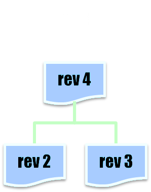
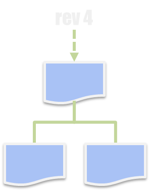

変更管理単位の違い

Subversion

Git
GitHubやGitLabはGitリポジトリのホスティングサービス。

Git自体は単なるコマンドラインツールなので、
それらが無くても使えます。
26c98f81 2019-06-14 kaitoy レビュー指摘の反映。
5b93bd5d 2019-06-03 kaitoy レビュー指摘の反映。
5ec441d0 2019-06-02 kaitoy 変数名の修正漏れの修正漏れを修正。
d00990f9 2019-06-02 kaitoy 変数名の修正漏れを修正。
e3759ac9 2019-05-31 kaitoy コメントのタイポ修正。
4ca93ce7 2019-05-31 kaitoy 変数名を修正。
f16bd1fe 2019-05-31 kaitoy コメントのタイポ修正。
b89e8689 2019-05-31 kaitoy 不良修正とリファクタリング。
レビュアー
26c98f81 2019-06-14 kaitoy ref#123 ⚡ レビュー指摘を受けて変数fooの初期化を最適化。
5b93bd5d 2019-06-03 kaitoy ref#123 📝 レビュー指摘を受けて関数hogeのdocstringを改善。
cc32d5d2 2019-06-02 kaitoy ref#123 🎨 変数名をコーディング規約に従って改善。
c3861a78 2019-06-02 kaitoy ref#123 ✏️ コメントのタイポ修正。
df5f00b5 2019-05-31 kaitoy ref#123 🐛 入力値チェックの範囲を仕様通りに修正。
d0e3ab0a 2019-05-31 kaitoy ref#123 🎨 関数hogeを再利用できるようにリファクタリング。

レビュアー